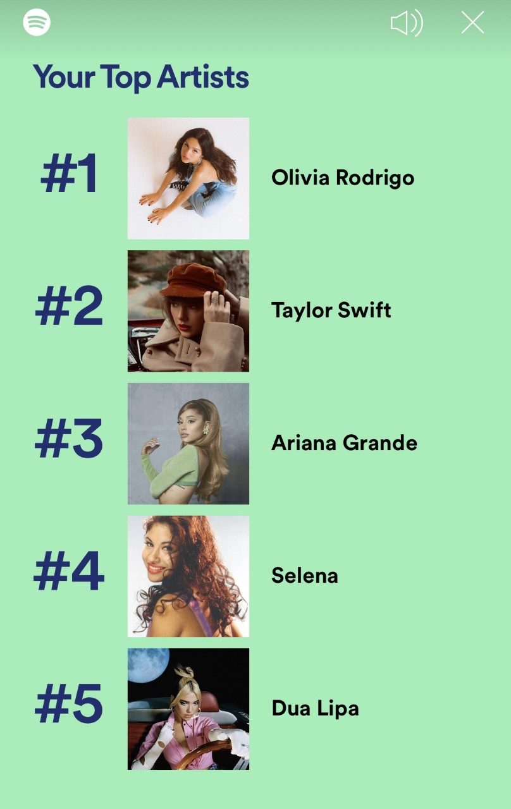
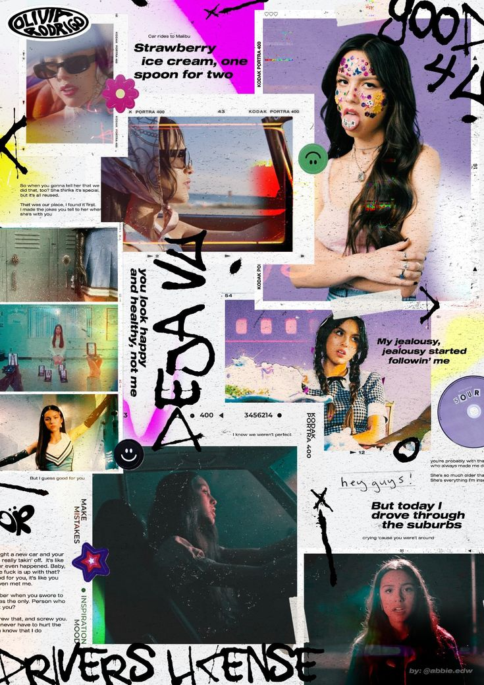
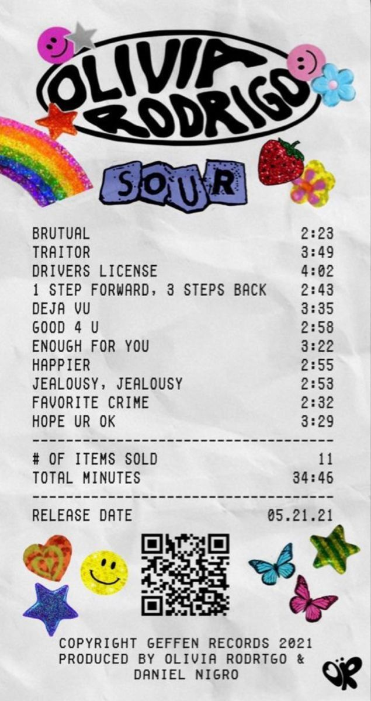

Taylor Swift being #2 is something I ama not surprised of because I am a huge swiftie. Ariana and Selena being there too is not shocing too but newcomers Olivia and Dua, welcome. I fell in love with Future Nostalgia this year so theres that, but Sour was like an obession. I was blasting it everywhere even if I didn't relate to the lyrics. Its not the best album but it just makes you feel things you felt, you never felt but feel the way it feels, the way you wish you felt or you jsut enjoy a good song. She was a powerful voice this year I am not surprised shes number one on my lists. Our music tastes change but some stuff always stays the same. Thanks to things like Spotif wrapped we can see our music outcome every year and lear what we lisened to this year.
 
Go back to page 1